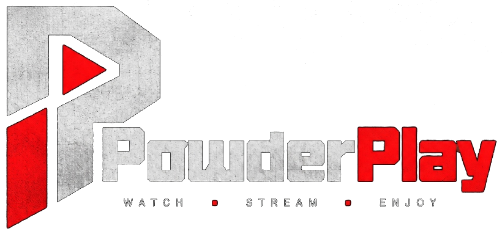

🔍
✕
🎭 Moods
🌌 Universes
🍿 Watch Together
REGION:
USA (US)
INDIA (IN)
UK (GB)
CANADA (CA)
AUSTRALIA (AU)
❮
❯
⭐ POPULAR
🔥 TRENDING
🏆 TOP RATED
🎬 NOW PLAYING
🚀 UPCOMING
🎁 FREE WITH ADS
SORT:
MOST POPULAR
TOP RATED (VOTE)
NEWEST RELEASE
BOX OFFICE REVENUE
POPULAR CATALOG
SHOWING RESULTS
[ ← PREVIOUS PAGE ]
PAGE 1
[ NEXT PAGE → ]
[ ← BACK TO CATALOG ]
[ ← BACK TO BROWSE ]
MOVIE STREAM
STREAM SOURCE:
⚡ SERVER 1 (VIDLINK)
⚡ SERVER 2 (VSEMBED)
⚡ SERVER 3 (AUTOEMBED)
⚡ SERVER 4 (2EMBED)
▶ OFFICIAL TRAILER
[ ↗ POP-OUT ]
[ ⛶ FULLSCREEN ]
INITIALIZING REALTIME STREAM…
REALTIME STREAM: SERVER 1 (VIDLINK HIGH-SPEED - PRIMARY)
BUFFERING OR BLOCKED? SWITCH MIRROR:
VIDLINK
VSEMBED
AUTOEMBED
2EMBED
OPEN IN NEW TAB ↗
OFFICIAL TRAILER
Trailer
✕ CLOSE